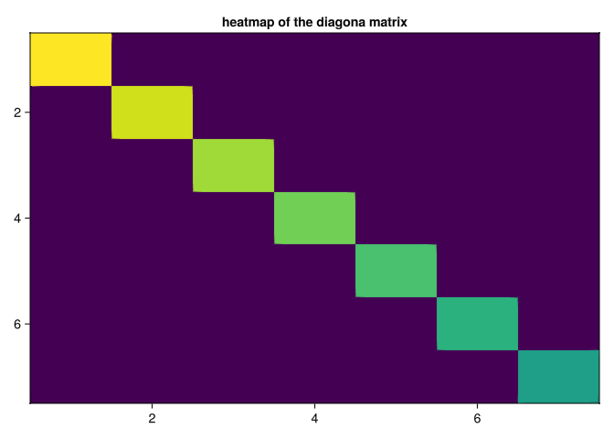
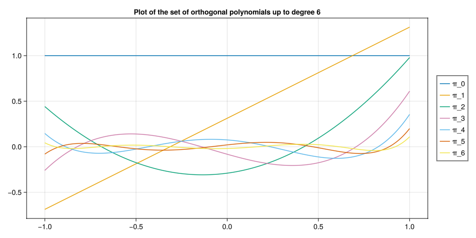
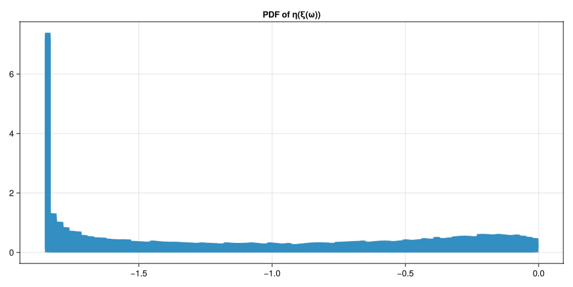
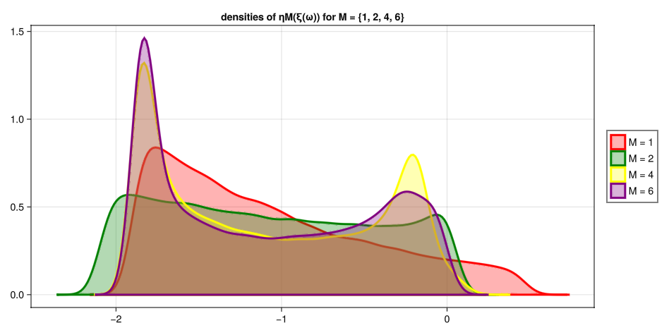
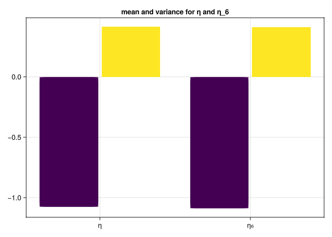
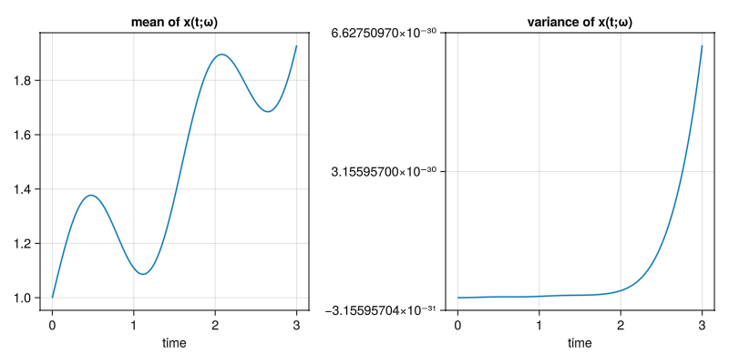
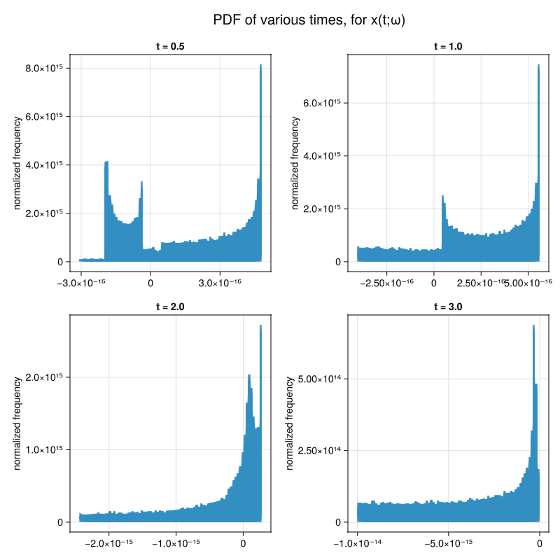
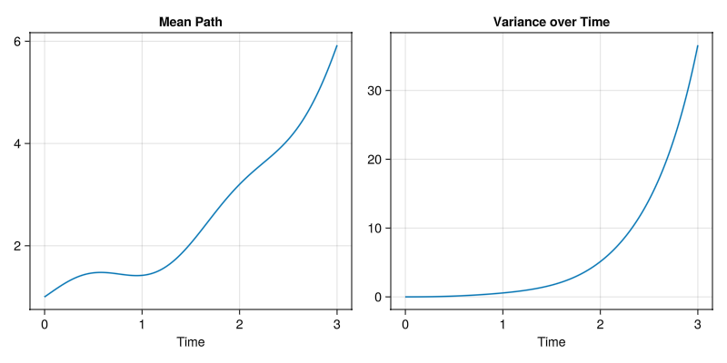
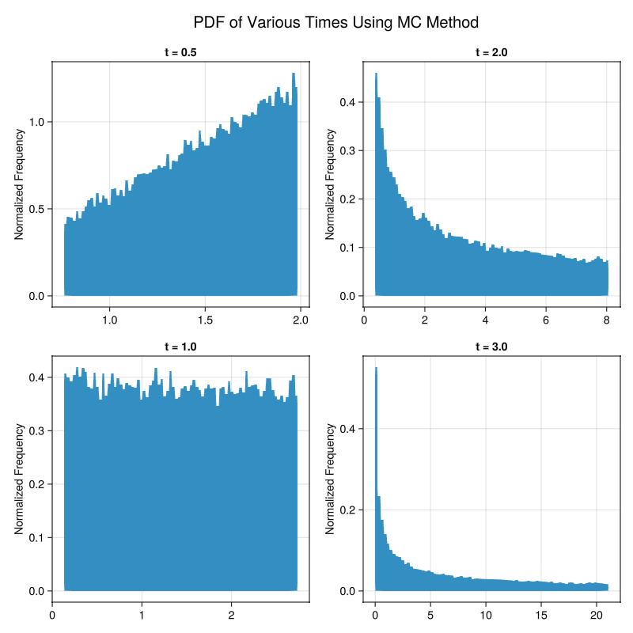

Use the Stieltjes algorithm to compute the sixth-order generalized polynomial choas basis \[\{P_0(x), P_1(x), ..., P_6(x)\}\] for \(\xi\), i.e. a set of polynomials up to degree 6 that are orthogonal relative to the PDF \(\xi\) given in Equation 1.
Solution
We know that since the distribution function Equation 1 is compactly supported, that the solution to the moment problem is unique and exists.
Let \(c = \frac{1}{e-e^{-1}}\) the constant in \(p_{\xi}(x)\)
Following the Stieltjes algorithm, let us compute the first orthogonal polynomial and then we will write a code that computes the first six orthogonal polynomials where \[\begin{align}
\mu(x) = ce^{-x}
\end{align}\]
Let us now write a code that produces any arbitray number of orthogonal polynomials with respect to the weight function.
usingGLMakieusingQuadGKusingStaticArraysusingStatistics# weight functionμ(x) =exp(-x) *^((exp(1.0) -^(exp(1.0), -1.0)), -1.0)# define an integral using gauss-kronrod quadrature ruleinteg(x::Function, sup::SVector{2}) =quadgk(x, sup[1], sup[2]; atol=1e-8, rtol=1e-8)[1]# the support of the weight functionsup =SVector{2}(-1.0, 1.0)# cumulative trapazoidal rulefunctioncumsumtrap(f::Function, x) y =f.(x) N =length(x) x1 =@view x[1:N-1] x2 =@view x[2:N] y1 =@view y[1:N-1] y2 =@view y[2:N] integral =cumsum(((x2.-x1).*(y1.+y2))./2.0) integral ./= integral[end]return [0; integral]end# CDF inverse samplerfunctionsampleInverseCDF(x::Float64, points::Matrix{Float64}) idx =findfirst(points[:, 1] .> x)if idx ===nothing p1 = points[end-1, :] p2 = points[end, :]elseif idx ==1 p1 = points[1, :] p2 = points[2, :]else p1 = points[idx-1, :] p2 = points[idx, :]endliy(x, p1, p2)end# Linear Interpolatorfunctionliy(x::Float64, p1::Vector{Float64}, p2::Vector{Float64}) x1, y1 = p1 x2, y2 = p2ifisapprox(x1, x2, atol =1e-12)return (y1 + y2) /2.0endreturn y1 + (x - x1)*(y2 - y1)/(x2 - x1)end# stieltjes algorithmfunctionstieltjes(μ::Function, N::Int64, sup::SVector{2})# μ: weight function defining the inner product# N: number of orthogonal polynomials to compute# sup: support (integration bounds) of the weight function M = N +2# Extend size to accommodate buffer n =2# Starting index for the recursion# Initialize orthogonal polynomials (πn) as functionsπ=Vector{Function}(undef, M)π[n-1] = x ->0.0* x^0.0# π₀(x) = 0π[n] = x ->1.0* x^0.0# π₁(x) = 1# Initialize coefficient vectors αn and βn α =Vector{Float64}(undef, M) β =Vector{Float64}(undef, M) β[n-1] =0.0# β₀ = 0 β[n] =0.0# β₁ = 0# Compute the first α coefficient (α₂)# α₂ = ⟨xπ₁, π₁⟩ / ⟨π₁, π₁⟩ α[n] =integ(x -> x *π[n](x) *π[n](x) *μ(x), sup) /integ(x ->π[n](x) *π[n](x) *μ(x), sup)# Compute the next orthogonal polynomial π₂# π₂(x) = (x - α₁)π₁(x) - β₁π₀(x)π[n+1] = x -> (x - α[n]) *π[n](x) - β[n] *π[n-1](x)for n in3:M-1 α[n] =integ(x -> x *π[n](x) *π[n](x) *μ(x), sup) /integ(x ->π[n](x) *π[n](x) *μ(x), sup) β[n] =integ(x ->π[n](x) *π[n](x) *μ(x), sup) /integ(x ->π[n-1](x) *π[n-1](x) *μ(x), sup)π[n+1] =π[n+1] = x -> (x - α[n]) *π[n](x) - β[n] *π[n-1](x)endreturnπendπ=stieltjes(μ, 6, sup)
8-element Vector{Function}:
#1 (generic function with 1 method)
#2 (generic function with 1 method)
#5 (generic function with 1 method)
#10 (generic function with 1 method)
#10 (generic function with 1 method)
#10 (generic function with 1 method)
#10 (generic function with 1 method)
#10 (generic function with 1 method)
Let us define a function that plots the first polynomial \(\pi_1(x)\) over the numerical result as a validation.
Let us write a code that computes the Matrix and then plot the matrix using a heatmap to check if it diagonal.
functionisdiagonal(π::Vector{Function}, sup::SVector{2}) A =Matrix{Float64}(undef, 7, 7)for idx inCartesianIndices(A) (k, j) = idx.I ele =integ(x->π[k+1](x) *π[j+1](x) *μ(x), sup) A[k, j] = ele <1e-12 ? 1e-8: eleend fig =Figure() ax =Axis(fig[1, 1], title ="heatmap of the diagona matrix")heatmap!(ax, log10.(A)) ax.yreversed=truesave("heatmapdiagonal.png", fig)endisdiagonal(π, sup)

Heatmap showing that the matrix of innerproducts with respect to the weight function of all polynomials generated is diagonal.
Clearly we can see that the matrix is diagonal and thus the polynomial functions are orthogonal with respect to the weight function.
Part C
Plot \(P_k(x)\) for \(k = 0, ..., 6\)
Solution
Let us define a code that plots all polynomials \(P_k(x)\) for \(k = 0, ..., 6\)
functionplotpolynomials(π::Vector{Function}) M =size(π)[1] fig =Figure();display(fig) ax =Axis(fig[1, 1], title ="Plot of the set of orthogonal polynomials up to degree 6") xs =LinRange(-1.0, 1.0, 1000)for n in1:M-1lines!(ax, xs, π[n+1].(xs), label="π_$(n-1)")endLegend(fig[1, 2], ax)save("plotpolynomials.png", fig)endplotpolynomials(π)

Plot of polynomials within the support [-1, 1]
Question 2
Consider the following nonlinear fuction of the random variable \(\xi(\omega)\) with PDF defined in Equation 1
Compute the PDF of \(\eta\) using the relative frequency approach. To this end, sample 50,000 realizations of \(\xi\) using the inverse CDF approach applied to Equation 1, and use such samples to compute samples of \(\eta(\omega)\).
Solution
The following code samples from Equation 1 50,000 times using the inverse sampling method previously applied in Homework 1 and 2, then applies the transformation Equation 3, and finally plots the histogram with 80 bins, normalized so that the PDF integrates to one over the support.
η(ξ) = (ξ -1) / (2+sin(2*ξ))functionquestion2a() r =LinRange(-1, 1, 1000) fig =Figure();display(fig) ax =Axis(fig[1, 1], title ="PDF of η(ξ(ω))") ys =cumsumtrap(μ, r) samples =Vector{Float64}(undef, 50000)for i ineachindex(samples) samples[i] =η(sampleInverseCDF(rand(), hcat(ys, r)))endhist!(ax, samples, bins =80, normalization =:pdf)save("question2a.png", fig) samplesendsamples =question2a();

PDF of \(\eta(\xi(\omega))\) by sampling 50,000 times via inverse CDF approach and applying the transformation Equation 3
converges to \(\eta(\omega)\) in distribution as \(M\) increases. To this end, plot the PDF of the random variables \(\eta_M(\xi(\omega))\) for \(M = 1, 2, 4, 6\) using method of relative frequencies and compare such PDF’s with the PDF of \(\eta\) you computed in part a.
Solution
functionquestion2b(πn::Vector{Function}) a =Vector{Float64}(undef, 7) colors =Symbol[:red, :green, :blue, :yellow, :orange, :purple]# calculate coefficientsfor k ineachindex(a) a[k] =integ(x ->η(x) * πn[k+1](x) *μ(x), sup) /integ(x -> πn[k+1](x) * πn[k+1](x) *μ(x), sup)end fig =Figure();display(fig) ax =Axis(fig[1, 1], title="densities of ηM(ξ(ω)) for M = {1, 2, 4, 6}") r =LinRange(-1, 1, 1000) ys =hcat(cumsumtrap(μ, r), r)for M inSVector{4}(1, 2, 4, 6) ηM_samples =Vector{Float64}(undef, 50000)for l ineachindex(ηM_samples) η_sum =0.0 ξ =sampleInverseCDF(rand(), ys)for k in1:M+1 η_sum+=a[k]*πn[k+1](ξ)end ηM_samples[l] = η_sumenddensity!(ax, ηM_samples, color = (colors[M], 0.3), label ="M = $M", strokecolor = colors[M], strokewidth =3, strokearound =true)endLegend(fig[1, 2], ax)save("question2b.png", fig)endquestion2b(π);

The PDF ploted using Kernel Density Estimation for values M = {1, 2, 4, 6}
As we can see, the PDF of the random variable \(\eta_M(\omega)\) converges to the PDF of \(\eta(\omega)\) as M increases.
Part C
Compute the mean and variance of \(\eta_6\) and compare it with the mean and variance of \(\eta\). Note that such means and variances can be computed in multiple ways, e.g., by using MC, or by approximating the integral defining the moments of the random variable \(\eta\) using quadrature, e.g., via the trapezoidal rule applied to the integral
Let us find the mean and variance of \(\eta\) and \(\eta_6\) by generating 1000 samples of size 1000 and taking the average of the mean and variance for each sample.
functionquestion2c() πn =stieltjes(μ, 6, sup) r =LinRange(-1, 1, 1000) ys =hcat(cumsumtrap(μ, r), r) η_samples =Vector{Float64}(undef, 50000)for i ineachindex(η_samples) η_samples[i] =η(sampleInverseCDF(rand(), ys))end a =Vector{Float64}(undef, 7)for k ineachindex(a) a[k] =integ(x ->η(x) * πn[k+1](x) *μ(x), sup) /integ(x -> πn[k+1](x) * πn[k+1](x) *μ(x), sup)end η6_samples =Vector{Float64}(undef, 50000)for l ineachindex(η6_samples) η_sum =0.0 ξ =sampleInverseCDF(rand(), ys)for k ineachindex(a) η_sum+=a[k]*πn[k+1](ξ)end η6_samples[l] = η_sumend means =Vector{Float64}(undef, 1000) variances =Vector{Float64}(undef, 1000)for i ineachindex(means) sample =rand(η_samples, 1000) means[i] =mean(sample) variances[i] =var(sample)end η_mean =mean(means) η_var =mean(variances) means =Vector{Float64}(undef, 1000) variances =Vector{Float64}(undef, 1000)for i ineachindex(means) sample =rand(η6_samples, 1000) means[i] =mean(sample) variances[i] =var(sample)end η6_mean =mean(means) η6_var =mean(variances) fig =Figure();display(fig) ax =Axis(fig[1, 1], xticks = (1:2, ["η", "η₆"]), title ="mean and variance for η and η_6")barplot!(ax, [1, 1, 2, 2], [η_mean, η_var, η6_mean, η6_var], dodge = [1, 2, 1, 2], color = [1, 2, 1, 2])save("question2c.png", fig)endquestion2c();

Barplot of the bootstrap mean and variance from MC for \(\eta\) and \(\eta_6\)
From the plot we can see the the sample mean and variance for both are almost identical.
Question 3
Compute the solution of the following random initial value problem
using the stocastic Galerkin method with the gPC basis you obtained in question 1. In particular, use the following gPC expansion of degree 6 for the solution of Equation 7.
where the gPC modes \(\hat{x}_k(t)\) are to be determined from Equation 7.
Part A
Compute the mean and the variance of Equation 8 of \(t \in [0, 3]\).
Solution
Let us find the solution of the random initial value problem by using the stocastic Galerkin method and finding the gPC modes by plugging in Equation 8 into Equation 7.
In the following code we precompute the expectations required for defining the first order system of equations, solve the IVP using Tsitouras 5/4 Runge-Kutta method, calculate the variance by the following:
and plot the mean and variance on two seperate graphs in the temporal domain [0, 3]
usingDifferentialEquationsfunctionquestion3a()# get polynomials πn =stieltjes(μ, 6, sup)# simulation initial and final time t0, tf =SVector{2}(0.0, 3.0)# initial conditions u0 =SVector{7}(1, 0, 0, 0, 0, 0, 0)# highest polynomial order M =size(πn)[1] -1# precompute E{Pj} Epj1 =Vector{Float64}(undef, M)for k ineachindex(Epj1) Epj1[k] =integ(x -> πn[k+1](x) *μ(x), sup)end# precompute E{Pj^2} Epj2 =Vector{Float64}(undef, M)for j ineachindex(Epj2) Epj2[j] =integ(x -> πn[j+1](x) * πn[j+1](x) *μ(x), sup)end# precompute E{P₁PkPj} Ep1pjpk =Matrix{Float64}(undef, M, M)for idx inCartesianIndices(Ep1pjpk) (j, k) = idx.I Ep1pjpk[j, k] =integ(x -> πn[2](x) * πn[j+1](x) * πn[k](x) *μ(x), sup)end# precompute the constant multiplying xhatj β = (2.0/ (exp(1.0)^2+1.0))# define the system of odesfunctionode(u, p, t)returnSVector{M}( ((-sum(u[k] * Ep1pjpk[j, k] for k in1:M))/Epj2[j]) + β*u[j] + (cos(4*t)*Epj1[j]/Epj2[j]) for j in1:M )end# solve the ode problem using Tsitouras 5/4 Runge-Kutta method prob =ODEProblem(ode, u0, (t0, tf)) sol =solve(prob, Tsit5(), saveat=0.01, abstol=1e-8, reltol=1e-8)# find the variance var =sum([(sol[k, :].^2) .* Epj2[k] for k in2:M], dims=1)[1]# plot the mean and variance fig =Figure(size = (800, 400));display(fig) ax1 =Axis(fig[1, 1], title ="mean of x(t;ω)", xlabel ="time") ax2 =Axis(fig[1, 2], title ="variance of x(t;ω)", xlabel ="time")lines!(ax1, sol.t, sol[1, :])lines!(ax2, sol.t, var)save("question3a.png", fig)return solendquestion3a();
┌ Warning: No strict ticks found
└ @ PlotUtils ~/.julia/packages/PlotUtils/dVEMd/src/ticks.jl:194┌ Warning: No strict ticks found
└ @ PlotUtils ~/.julia/packages/PlotUtils/dVEMd/src/ticks.jl:194┌ Warning: No strict ticks found
└ @ PlotUtils ~/.julia/packages/PlotUtils/dVEMd/src/ticks.jl:194

The mean and variance of Equation 8 in \(t \in [0, 3]\)
Part B
Compute the PDF of Equation 8 at times \(\{0.5, 1, 2, 3\}\) (use relative frequencies).
Note: you can debug your gPC results by either computing the analytic solution of Equation 7 and then computing moments/PDFs of such solutions as a function of \(t\), or by randomly sampling many solution paths of Equation 7 and then computing ensemble averages.
Solution
We have everything we need to compute the PDF of Equation 8 for various times.
Let us generate a random vector by sampling \(p_{\xi}(x)\) 50,000 times, then generate samples by evaluating the following:
\[\begin{align}
&\hat{x}_i(t^*) &\quad &\text{are the gPC coefficients at time } t^* \\
&P_i(\xi) &\quad &\text{are the gPC basis functions} \\
&\xi &\quad &\text{random variables from the distribution } P_{\xi}(x)
\end{align}\]
functionquestion3b()# get orthogonal polynomials πn =stieltjes(μ, 6, sup)# get gPC modes sol =question3a()# generate samples of ξ r =LinRange(-1, 1, 1000) ys =hcat(cumsumtrap(μ, r), r) ξ_samples =Vector{Float64}(undef, 50000)for i ineachindex(ξ_samples) ξ_samples[i] =sampleInverseCDF(rand(), ys)end# define t* times =SVector{4}(0.5, 1.0, 2.0, 3.0)# number of solutions (gPC modes) M =size(sol)[1]# define figure fig =Figure(size = (800, 800)) ax =SVector{4}(Axis(fig[1, 1]), Axis(fig[1, 2]), Axis(fig[2, 1]), Axis(fig[2, 2]))# plot histogram of samples of x(tstar;ω)for (i, tstar) inenumerate(times)hist!(ax[i], sum(sol(tstar)[j] .* πn[j].(ξ_samples) for j in1:M), bins =80, normalization =:pdf) ax[i].title ="t = $tstar" ax[i].ylabel ="normalized frequency"endLabel(fig[0, :], "PDF of various times, for x(t;ω)", fontsize=20)save("question3b.png", fig)endquestion3b();
┌ Warning: No strict ticks found
└ @ PlotUtils ~/.julia/packages/PlotUtils/dVEMd/src/ticks.jl:194┌ Warning: No strict ticks found
└ @ PlotUtils ~/.julia/packages/PlotUtils/dVEMd/src/ticks.jl:194

PDF for various times found by the method of relative frequencies
Appendix
Validation
Let us randomly sample many solution paths of Equation 7 and then compute the ensemble average to validate our gPC results.
For this we will generate 50,000 samples from the PDF of Equation 1, then solve the ODE numerically 50,000 times and plot the histogram of the normalized frequency just as we did in Question 3 partb.
functionvalidation(N::Int64)# generate samples of ξ r =LinRange(-1, 1, 1000) ys =hcat(cumsumtrap(μ, r), r) ξ_samples =Vector{Float64}(undef, N)for i ineachindex(ξ_samples) ξ_samples[i] =sampleInverseCDF(rand(), ys)end# define t* times =SVector{4}(0.5, 1.0, 2.0, 3.0)# define the ODEProblemfunctionode(u, p, t)returnSVector{1}(-p * u[1] +cos(4*t))end# initial condition u0 =SVector{1}(1)# solve once to get size of time vector prob =ODEProblem(ode, u0, (0.0, 3.0), -1.0) sol =solve(prob, Tsit5(), saveat=0.01, abstol=1e-8, reltol=1e-8)# init matrix to store solutions solTstar = [Float64[] for _ in1:length(times)] solutions =Matrix{Float64}(undef, N, size(sol.t)[1])# solve the ode for each sample and extract sample pathsfor (i, ξ) inenumerate(ξ_samples) prob =ODEProblem(ode, u0, (0.0, 3.0), ξ) sol =solve(prob, Tsit5(), saveat=0.01, abstol=1e-8, reltol=1e-8) solutions[i, :] =Float64[u[1] for u in sol.u]for (j, tstar) inenumerate(times)push!(solTstar[j], sol(tstar)[1])endend# calculate sample path mean and variance meanPath =mean(solutions, dims=1) variancePath =var(solutions, mean=meanPath, dims=1)# plot results fig1 =Figure(size = (800, 800)) ax1 = [Axis(fig1[i, j]) for i in1:2, j in1:2] fig2 =Figure(size = (800, 400)) ax2 = [Axis(fig2[1, i]) for i in1:2]for (i, tstar) inenumerate(times)hist!(ax1[i], solTstar[i], bins =80, normalization =:pdf) ax1[i].title ="t = $tstar" ax1[i].ylabel ="Normalized Frequency"endLabel(fig1[0, :], "PDF of Various Times Using MC Method", fontsize=20)lines!(ax2[1], sol.t, vec(meanPath), label="Mean Path") ax2[1].title ="Mean Path" ax2[1].xlabel ="Time"lines!(ax2[2], sol.t, vec(variancePath), label="Variance") ax2[2].title ="Variance over Time" ax2[2].xlabel ="Time"save("validationPDF.png", fig1)save("validationmeanvar.png", fig2)endvalidation(50000);

The mean and variance of \(x(t;\omega)\) using Monte Carlo method

The PDF for specific times using Monte Carlo method
Footnotes
Note that \(\mathbb{E}\{\eta(\xi(\omega))P_k(\xi(\omega))\}\) can be computed with MC, or with quadrature as \[\mathbb{E}\{\eta(\xi(\omega))P_k(\xi(\omega))\}= \int_{-1}^{1}\frac{x - 1}{2 + 1 \sin(2x)}P_k(x)P_\xi(x)dx \tag{4}\]↩︎
Source Code
---title: Homework 5date: 2024-11-14author: - name: Kevin Silberberg id: ks orcid: 0009-0009-4825-1865 email: ksilberb@ucsc.edu affiliation: - name: University of California Santa Cruz city: Santa Cruz state: CA href: https://www.ucsc.eduengine: julia-1.11julia: exeflags: ["--project=/home/kevinsilberberg/Repos/paxnomada/courses/uncertainty_quant/"]execute: daemon: true cache: true eval: true freeze: auto---# Question 1Consider a random variable $\xi$ with PDF$$p_{\xi}(x) =\begin{cases}\frac{e^{-x}}{e - e^{-1}} & x \in [-1, 1]\\0 & \text{otherwise}\end{cases}$$ {#eq-pxi}## Part AUse the Stieltjes algorithm to compute the sixth-order generalized polynomial choas basis $$\{P_0(x), P_1(x), ..., P_6(x)\}$$ for $\xi$, i.e. a set of polynomials up to degree 6 that are orthogonal relative to the PDF $\xi$ given in @eq-pxi.### SolutionWe know that since the distribution function @eq-pxi is compactly supported, that the solution to the moment problem is unique and exists.Let $c = \frac{1}{e-e^{-1}}$ the constant in $p_{\xi}(x)$Following the Stieltjes algorithm, let us compute the first orthogonal polynomial and then we will write a code that computes the first six orthogonal polynomials where\begin{align}\mu(x) = ce^{-x}\end{align}is out weight function.Let $n = 0 \quad \pi_0 = 1 \quad \pi_{-1} = 0$\begin{align}\alpha_0 &= \frac{\langle x , 1 \rangle}{\langle 1, 1 \rangle} \\&= \frac{c \int_{-1}^{1}x e^{-x}dx}{c \int_{-1}^{1}e^{-x}dx} \\&= \frac{\left[{-x e^{-x}}_{\bigg{\vert}_{-1}^{1}} - \int_{-1}^{1}-e^{-x}dx\right]}{\left[{-e^{-x}}_{\bigg{\vert}_{-1}^{1}}\right] } \\&= \frac{-e^{-1} - e - e^{-1} + e}{-e^{-1} + e} \\&= -\frac{2}{e^2 - 1} \approx -0.31304\end{align}Using $\alpha_0$ let us find the first polynomial $\pi_1$ using the following formula\begin{align}\pi_{n+1}(x) = (x - \alpha_n)\pi_n(x) - \beta_n \pi_{n-1}(x)\end{align}\begin{align}\pi_1(x) &= (x - \alpha_0)\pi_0 - \beta_0 \pi_{-1} \\&= x + \frac{2}{e^2 - 1}\end{align}Let us now write a code that produces any arbitray number of orthogonal polynomials with respect to the weight function.```{julia}usingGLMakieusingQuadGKusingStaticArraysusingStatistics# weight functionμ(x) =exp(-x) *^((exp(1.0) -^(exp(1.0), -1.0)), -1.0)# define an integral using gauss-kronrod quadrature ruleinteg(x::Function, sup::SVector{2}) =quadgk(x, sup[1], sup[2]; atol=1e-8, rtol=1e-8)[1]# the support of the weight functionsup =SVector{2}(-1.0, 1.0)# cumulative trapazoidal rulefunctioncumsumtrap(f::Function, x) y =f.(x) N =length(x) x1 =@view x[1:N-1] x2 =@view x[2:N] y1 =@view y[1:N-1] y2 =@view y[2:N] integral =cumsum(((x2.-x1).*(y1.+y2))./2.0) integral ./= integral[end]return [0; integral]end# CDF inverse samplerfunctionsampleInverseCDF(x::Float64, points::Matrix{Float64}) idx =findfirst(points[:, 1] .> x)if idx ===nothing p1 = points[end-1, :] p2 = points[end, :]elseif idx ==1 p1 = points[1, :] p2 = points[2, :]else p1 = points[idx-1, :] p2 = points[idx, :]endliy(x, p1, p2)end# Linear Interpolatorfunctionliy(x::Float64, p1::Vector{Float64}, p2::Vector{Float64}) x1, y1 = p1 x2, y2 = p2ifisapprox(x1, x2, atol =1e-12)return (y1 + y2) /2.0endreturn y1 + (x - x1)*(y2 - y1)/(x2 - x1)end# stieltjes algorithmfunctionstieltjes(μ::Function, N::Int64, sup::SVector{2})# μ: weight function defining the inner product# N: number of orthogonal polynomials to compute# sup: support (integration bounds) of the weight function M = N +2# Extend size to accommodate buffer n =2# Starting index for the recursion# Initialize orthogonal polynomials (πn) as functionsπ=Vector{Function}(undef, M)π[n-1] = x ->0.0* x^0.0# π₀(x) = 0π[n] = x ->1.0* x^0.0# π₁(x) = 1# Initialize coefficient vectors αn and βn α =Vector{Float64}(undef, M) β =Vector{Float64}(undef, M) β[n-1] =0.0# β₀ = 0 β[n] =0.0# β₁ = 0# Compute the first α coefficient (α₂)# α₂ = ⟨xπ₁, π₁⟩ / ⟨π₁, π₁⟩ α[n] =integ(x -> x *π[n](x) *π[n](x) *μ(x), sup) /integ(x ->π[n](x) *π[n](x) *μ(x), sup)# Compute the next orthogonal polynomial π₂# π₂(x) = (x - α₁)π₁(x) - β₁π₀(x)π[n+1] = x -> (x - α[n]) *π[n](x) - β[n] *π[n-1](x)for n in3:M-1 α[n] =integ(x -> x *π[n](x) *π[n](x) *μ(x), sup) /integ(x ->π[n](x) *π[n](x) *μ(x), sup) β[n] =integ(x ->π[n](x) *π[n](x) *μ(x), sup) /integ(x ->π[n-1](x) *π[n-1](x) *μ(x), sup)π[n+1] =π[n+1] = x -> (x - α[n]) *π[n](x) - β[n] *π[n-1](x)endreturnπendπ=stieltjes(μ, 6, sup)```Let us define a function that plots the first polynomial $\pi_1(x)$ over the numerical result as a validation.```{julia}functionvalidatepione(π::Vector{Function})π_1(x) = x + (2/ (exp(1)^2-1)) xs =LinRange(-1, 1, 1000) fig =Figure() ax =Axis(fig[1, 1], title ="first orthogonal polynomial validation")lines!(ax, xs, π_1.(xs), label ="analytical")lines!(ax, xs, π[3].(xs), label ="numerical", linestyle =:dash, color =:red)Legend(fig[1, 2], ax)save("validationpione.png", fig)endvalidatepione(π);```## Part BVeriy that the polynomial basis you obtained in part a is orthogonal, i.e., that the matrix$$\mathbb{E}\{P_k(\xi)P_j(\xi)\} = \int_{-1}^{1} P_k(x)P_j(x)dx$${#eq-polybasis}is diagonal.### SolutionLet us write a code that computes the Matrix and then plot the matrix using a heatmap to check if it diagonal.```{julia}functionisdiagonal(π::Vector{Function}, sup::SVector{2}) A =Matrix{Float64}(undef, 7, 7)for idx inCartesianIndices(A) (k, j) = idx.I ele =integ(x->π[k+1](x) *π[j+1](x) *μ(x), sup) A[k, j] = ele <1e-12 ? 1e-8: eleend fig =Figure() ax =Axis(fig[1, 1], title ="heatmap of the diagona matrix")heatmap!(ax, log10.(A)) ax.yreversed=truesave("heatmapdiagonal.png", fig)endisdiagonal(π, sup)```Clearly we can see that the matrix is diagonal and thus the polynomial functions are orthogonal with respect to the weight function.## Part CPlot $P_k(x)$ for $k = 0, ..., 6$### SolutionLet us define a code that plots all polynomials $P_k(x)$ for $k = 0, ..., 6$```{julia}functionplotpolynomials(π::Vector{Function}) M =size(π)[1] fig =Figure();display(fig) ax =Axis(fig[1, 1], title ="Plot of the set of orthogonal polynomials up to degree 6") xs =LinRange(-1.0, 1.0, 1000)for n in1:M-1lines!(ax, xs, π[n+1].(xs), label="π_$(n-1)")endLegend(fig[1, 2], ax)save("plotpolynomials.png", fig)endplotpolynomials(π)```![Plot of polynomials within the support [-1, 1]](plotpolynomials.png)# Question 2Consider the following nonlinear fuction of the random variable $\xi(\omega)$ with PDF defined in @eq-pxi$$\eta(\omega) = \frac{\xi(\omega) -1}{2 + 1\sin{(2\xi(\omega))}}$$ {#eq-eta}## Part ACompute the PDF of $\eta$ using the relative frequency approach. To this end, sample 50,000 realizations of $\xi$ using the inverse CDF approach applied to @eq-pxi, and use such samples to compute samples of $\eta(\omega)$.### SolutionThe following code samples from @eq-pxi 50,000 times using the inverse sampling method previously applied in Homework 1 and 2, then applies the transformation @eq-eta, and finally plots the histogram with 80 bins, normalized so that the PDF integrates to one over the support.```{julia}η(ξ) = (ξ -1) / (2+sin(2*ξ))functionquestion2a() r =LinRange(-1, 1, 1000) fig =Figure();display(fig) ax =Axis(fig[1, 1], title ="PDF of η(ξ(ω))") ys =cumsumtrap(μ, r) samples =Vector{Float64}(undef, 50000)for i ineachindex(samples) samples[i] =η(sampleInverseCDF(rand(), hcat(ys, r)))endhist!(ax, samples, bins =80, normalization =:pdf)save("question2a.png", fig) samplesendsamples =question2a();```## Part BShow numerically that the gPC expansion [^2]$$\eta_M(\omega) = \sum_{k=0}^{M}a_k P_k(\xi(\omega)), \quad a_k = \frac{\mathbb{E}\{\eta(\xi(\omega))P_k(\xi(\omega))\}}{\mathbb{E}\{P_k^2(\xi(\omega))\}}$$ {#eq-gpc}converges to $\eta(\omega)$ in distribution as $M$ increases. To this end, plot the PDF of the random variables $\eta_M(\xi(\omega))$ for $M = 1, 2, 4, 6$ using method of relative frequencies and compare such PDF's with the PDF of $\eta$ you computed in part a.### Solution```{julia}functionquestion2b(πn::Vector{Function}) a =Vector{Float64}(undef, 7) colors =Symbol[:red, :green, :blue, :yellow, :orange, :purple]# calculate coefficientsfor k ineachindex(a) a[k] =integ(x ->η(x) * πn[k+1](x) *μ(x), sup) /integ(x -> πn[k+1](x) * πn[k+1](x) *μ(x), sup)end fig =Figure();display(fig) ax =Axis(fig[1, 1], title="densities of ηM(ξ(ω)) for M = {1, 2, 4, 6}") r =LinRange(-1, 1, 1000) ys =hcat(cumsumtrap(μ, r), r)for M inSVector{4}(1, 2, 4, 6) ηM_samples =Vector{Float64}(undef, 50000)for l ineachindex(ηM_samples) η_sum =0.0 ξ =sampleInverseCDF(rand(), ys)for k in1:M+1 η_sum+=a[k]*πn[k+1](ξ)end ηM_samples[l] = η_sumenddensity!(ax, ηM_samples, color = (colors[M], 0.3), label ="M = $M", strokecolor = colors[M], strokewidth =3, strokearound =true)endLegend(fig[1, 2], ax)save("question2b.png", fig)endquestion2b(π);```As we can see, the PDF of the random variable $\eta_M(\omega)$ converges to the PDF of $\eta(\omega)$ as M increases.[^2]: Note that $\mathbb{E}\{\eta(\xi(\omega))P_k(\xi(\omega))\}$ can be computed with MC, or with quadrature as $$\mathbb{E}\{\eta(\xi(\omega))P_k(\xi(\omega))\}= \int_{-1}^{1}\frac{x - 1}{2 + 1 \sin(2x)}P_k(x)P_\xi(x)dx$$ {#eq-four}## Part CCompute the mean and variance of $\eta_6$ and compare it with the mean and variance of $\eta$. Note that such means and variances can be computed in multiple ways, e.g., by using MC, or by approximating the integral defining the moments of the random variable $\eta$ using quadrature, e.g., via the trapezoidal rule applied to the integral$$\mathbb{E}\{\eta^k\} = \int_{-1}^{1} \left(\frac{x-1}{2+\sin(2x)}\right)^k p_{\xi}(x)dx$$ {#eq-quadr}### SolutionLet us find the mean and variance of $\eta$ and $\eta_6$ by generating 1000 samples of size 1000 and taking the average of the mean and variance for each sample.```{julia}functionquestion2c() πn =stieltjes(μ, 6, sup) r =LinRange(-1, 1, 1000) ys =hcat(cumsumtrap(μ, r), r) η_samples =Vector{Float64}(undef, 50000)for i ineachindex(η_samples) η_samples[i] =η(sampleInverseCDF(rand(), ys))end a =Vector{Float64}(undef, 7)for k ineachindex(a) a[k] =integ(x ->η(x) * πn[k+1](x) *μ(x), sup) /integ(x -> πn[k+1](x) * πn[k+1](x) *μ(x), sup)end η6_samples =Vector{Float64}(undef, 50000)for l ineachindex(η6_samples) η_sum =0.0 ξ =sampleInverseCDF(rand(), ys)for k ineachindex(a) η_sum+=a[k]*πn[k+1](ξ)end η6_samples[l] = η_sumend means =Vector{Float64}(undef, 1000) variances =Vector{Float64}(undef, 1000)for i ineachindex(means) sample =rand(η_samples, 1000) means[i] =mean(sample) variances[i] =var(sample)end η_mean =mean(means) η_var =mean(variances) means =Vector{Float64}(undef, 1000) variances =Vector{Float64}(undef, 1000)for i ineachindex(means) sample =rand(η6_samples, 1000) means[i] =mean(sample) variances[i] =var(sample)end η6_mean =mean(means) η6_var =mean(variances) fig =Figure();display(fig) ax =Axis(fig[1, 1], xticks = (1:2, ["η", "η₆"]), title ="mean and variance for η and η_6")barplot!(ax, [1, 1, 2, 2], [η_mean, η_var, η6_mean, η6_var], dodge = [1, 2, 1, 2], color = [1, 2, 1, 2])save("question2c.png", fig)endquestion2c();```From the plot we can see the the sample mean and variance for both are almost identical.# Question 3Compute the solution of the following random initial value problem$$\begin{cases} \frac{dx}{dt} &= -\xi(\omega)x + \cos(4t) \\ x(0) &= 1\end{cases}$$ {#eq-randomivp}using the stocastic Galerkin method with the gPC basis you obtained in question 1. In particular, use the following gPC expansion of degree 6 for the solution of @eq-randomivp.$$x(t;\omega) = \sum_{k=0}^6 \hat{x}_k(t)P_k(\xi(\omega))$${#eq-eight}where the gPC modes $\hat{x}_k(t)$ are to be determined from @eq-randomivp.## Part ACompute the mean and the variance of @eq-eight of $t \in [0, 3]$.### SolutionLet us find the solution of the random initial value problem by using the stocastic Galerkin method and finding the gPC modes by plugging in @eq-eight into @eq-randomivp.\begin{align} \sum_{k=0}^{6}\frac{\partial \hat{x}_k}{\partial t}P_k &= -\xi \sum_{k=0}^{6}\hat{x}_k P_k + cos(4t) \\\frac{\partial \hat{x}_j}{\partial t}\mathbb{E}\{P_j^2\} &= -\sum_{k=0}^{6}\hat{x}_k \mathbb{E}\{\xi P_k P_j\} + \cos(4t) \mathbb{E}\{P_j\}\\\frac{\partial \hat{x}_j}{\partial t} &= -\frac{1}{\mathbb{E}\{P_j^2\}}\sum_{k=0}^{6}\hat{x}_k \mathbb{E}\{\xi P_k P_j\} + \frac{\cos(4t) \mathbb{E}\{P_j\}}{\mathbb{E}\{P_j^2\}} \\\end{align}Recall from Question 1, Part A where we calculated the $P_1(\xi)$\begin{align}P_1(\xi) &= \xi + \frac{2}{e^2 + 1} \\\xi &= P_1(\xi) - \frac{2}{e^2 + 1}\end{align}Plugging $\xi$ back into the ODE we have:\begin{align}\frac{\partial \hat{x}_j}{\partial t} &= -\frac{1}{\mathbb{E}\{P_j^2\}}\sum_{k=0}^{6}\hat{x}_k \mathbb{E}\{ \left(P_1(\xi) - \frac{2}{e^2 + 1}\right) P_k P_j\} + \frac{\cos(4t) \mathbb{E}\{P_j\}}{\mathbb{E}\{P_j^2\}} \\\frac{\partial \hat{x}_j}{\partial t} &= -\frac{1}{ \mathbb{E}\{P_j^2\}} \sum_{k=0}^{6}\hat{x}_k \mathbb{E}\{P_1 P_k P_j\} + \frac{2\hat{x}}{e^2 + 1} + \frac{\cos(4t) \mathbb{E}\{P_j\}}{ \mathbb{E}\{P_j^2\}}\end{align}where the initial conditions are:\begin{align}x(0;\omega) &= 1 \\x(j;\omega) &= 0 \quad \text{for } j = 1, ..., 6\end{align}In the following code we precompute the expectations required for defining the first order system of equations, solve the IVP using Tsitouras 5/4 Runge-Kutta method, calculate the variance by the following:\begin{align}var(x(t;\omega)) = \sum_{k=1}^{6}\hat{x}_k^2(t) \mathbb{E}\{P_k^2\}\end{align}and plot the mean and variance on two seperate graphs in the temporal domain [0, 3]```{julia}usingDifferentialEquationsfunctionquestion3a()# get polynomials πn =stieltjes(μ, 6, sup)# simulation initial and final time t0, tf =SVector{2}(0.0, 3.0)# initial conditions u0 =SVector{7}(1, 0, 0, 0, 0, 0, 0)# highest polynomial order M =size(πn)[1] -1# precompute E{Pj} Epj1 =Vector{Float64}(undef, M)for k ineachindex(Epj1) Epj1[k] =integ(x -> πn[k+1](x) *μ(x), sup)end# precompute E{Pj^2} Epj2 =Vector{Float64}(undef, M)for j ineachindex(Epj2) Epj2[j] =integ(x -> πn[j+1](x) * πn[j+1](x) *μ(x), sup)end# precompute E{P₁PkPj} Ep1pjpk =Matrix{Float64}(undef, M, M)for idx inCartesianIndices(Ep1pjpk) (j, k) = idx.I Ep1pjpk[j, k] =integ(x -> πn[2](x) * πn[j+1](x) * πn[k](x) *μ(x), sup)end# precompute the constant multiplying xhatj β = (2.0/ (exp(1.0)^2+1.0))# define the system of odesfunctionode(u, p, t)returnSVector{M}( ((-sum(u[k] * Ep1pjpk[j, k] for k in1:M))/Epj2[j]) + β*u[j] + (cos(4*t)*Epj1[j]/Epj2[j]) for j in1:M )end# solve the ode problem using Tsitouras 5/4 Runge-Kutta method prob =ODEProblem(ode, u0, (t0, tf)) sol =solve(prob, Tsit5(), saveat=0.01, abstol=1e-8, reltol=1e-8)# find the variance var =sum([(sol[k, :].^2) .* Epj2[k] for k in2:M], dims=1)[1]# plot the mean and variance fig =Figure(size = (800, 400));display(fig) ax1 =Axis(fig[1, 1], title ="mean of x(t;ω)", xlabel ="time") ax2 =Axis(fig[1, 2], title ="variance of x(t;ω)", xlabel ="time")lines!(ax1, sol.t, sol[1, :])lines!(ax2, sol.t, var)save("question3a.png", fig)return solendquestion3a();```![The mean and variance of @eq-eight in $t \in [0, 3]$](question3a.png)## Part BCompute the PDF of @eq-eight at times $\{0.5, 1, 2, 3\}$ (use relative frequencies).Note: you can debug your gPC results by either computing the analytic solution of @eq-randomivp and then computing moments/PDFs of such solutions as a function of $t$, or by randomly sampling many solution paths of @eq-randomivp and then computing ensemble averages.### SolutionWe have everything we need to compute the PDF of @eq-eight for various times.Let us generate a random vector by sampling $p_{\xi}(x)$ 50,000 times, then generate samples by evaluating the following:\begin{align}x(t^*;\omega) = \sum_{i=0}^{6}\hat{x}_i(t^*) P_i(\xi(\omega))\end{align}where\begin{align}&\hat{x}_i(t^*) &\quad &\text{are the gPC coefficients at time } t^* \\&P_i(\xi) &\quad &\text{are the gPC basis functions} \\&\xi &\quad &\text{random variables from the distribution } P_{\xi}(x)\end{align}```{julia}functionquestion3b()# get orthogonal polynomials πn =stieltjes(μ, 6, sup)# get gPC modes sol =question3a()# generate samples of ξ r =LinRange(-1, 1, 1000) ys =hcat(cumsumtrap(μ, r), r) ξ_samples =Vector{Float64}(undef, 50000)for i ineachindex(ξ_samples) ξ_samples[i] =sampleInverseCDF(rand(), ys)end# define t* times =SVector{4}(0.5, 1.0, 2.0, 3.0)# number of solutions (gPC modes) M =size(sol)[1]# define figure fig =Figure(size = (800, 800)) ax =SVector{4}(Axis(fig[1, 1]), Axis(fig[1, 2]), Axis(fig[2, 1]), Axis(fig[2, 2]))# plot histogram of samples of x(tstar;ω)for (i, tstar) inenumerate(times)hist!(ax[i], sum(sol(tstar)[j] .* πn[j].(ξ_samples) for j in1:M), bins =80, normalization =:pdf) ax[i].title ="t = $tstar" ax[i].ylabel ="normalized frequency"endLabel(fig[0, :], "PDF of various times, for x(t;ω)", fontsize=20)save("question3b.png", fig)endquestion3b();```# Appendix## ValidationLet us randomly sample many solution paths of @eq-randomivp and then compute the ensemble average to validate our gPC results.For this we will generate 50,000 samples from the PDF of @eq-pxi, then solve the ODE numerically 50,000 times and plot the histogram of the normalized frequency just as we did in Question 3 partb.```{julia}functionvalidation(N::Int64)# generate samples of ξ r =LinRange(-1, 1, 1000) ys =hcat(cumsumtrap(μ, r), r) ξ_samples =Vector{Float64}(undef, N)for i ineachindex(ξ_samples) ξ_samples[i] =sampleInverseCDF(rand(), ys)end# define t* times =SVector{4}(0.5, 1.0, 2.0, 3.0)# define the ODEProblemfunctionode(u, p, t)returnSVector{1}(-p * u[1] +cos(4*t))end# initial condition u0 =SVector{1}(1)# solve once to get size of time vector prob =ODEProblem(ode, u0, (0.0, 3.0), -1.0) sol =solve(prob, Tsit5(), saveat=0.01, abstol=1e-8, reltol=1e-8)# init matrix to store solutions solTstar = [Float64[] for _ in1:length(times)] solutions =Matrix{Float64}(undef, N, size(sol.t)[1])# solve the ode for each sample and extract sample pathsfor (i, ξ) inenumerate(ξ_samples) prob =ODEProblem(ode, u0, (0.0, 3.0), ξ) sol =solve(prob, Tsit5(), saveat=0.01, abstol=1e-8, reltol=1e-8) solutions[i, :] =Float64[u[1] for u in sol.u]for (j, tstar) inenumerate(times)push!(solTstar[j], sol(tstar)[1])endend# calculate sample path mean and variance meanPath =mean(solutions, dims=1) variancePath =var(solutions, mean=meanPath, dims=1)# plot results fig1 =Figure(size = (800, 800)) ax1 = [Axis(fig1[i, j]) for i in1:2, j in1:2] fig2 =Figure(size = (800, 400)) ax2 = [Axis(fig2[1, i]) for i in1:2]for (i, tstar) inenumerate(times)hist!(ax1[i], solTstar[i], bins =80, normalization =:pdf) ax1[i].title ="t = $tstar" ax1[i].ylabel ="Normalized Frequency"endLabel(fig1[0, :], "PDF of Various Times Using MC Method", fontsize=20)lines!(ax2[1], sol.t, vec(meanPath), label="Mean Path") ax2[1].title ="Mean Path" ax2[1].xlabel ="Time"lines!(ax2[2], sol.t, vec(variancePath), label="Variance") ax2[2].title ="Variance over Time" ax2[2].xlabel ="Time"save("validationPDF.png", fig1)save("validationmeanvar.png", fig2)endvalidation(50000);```
![]()